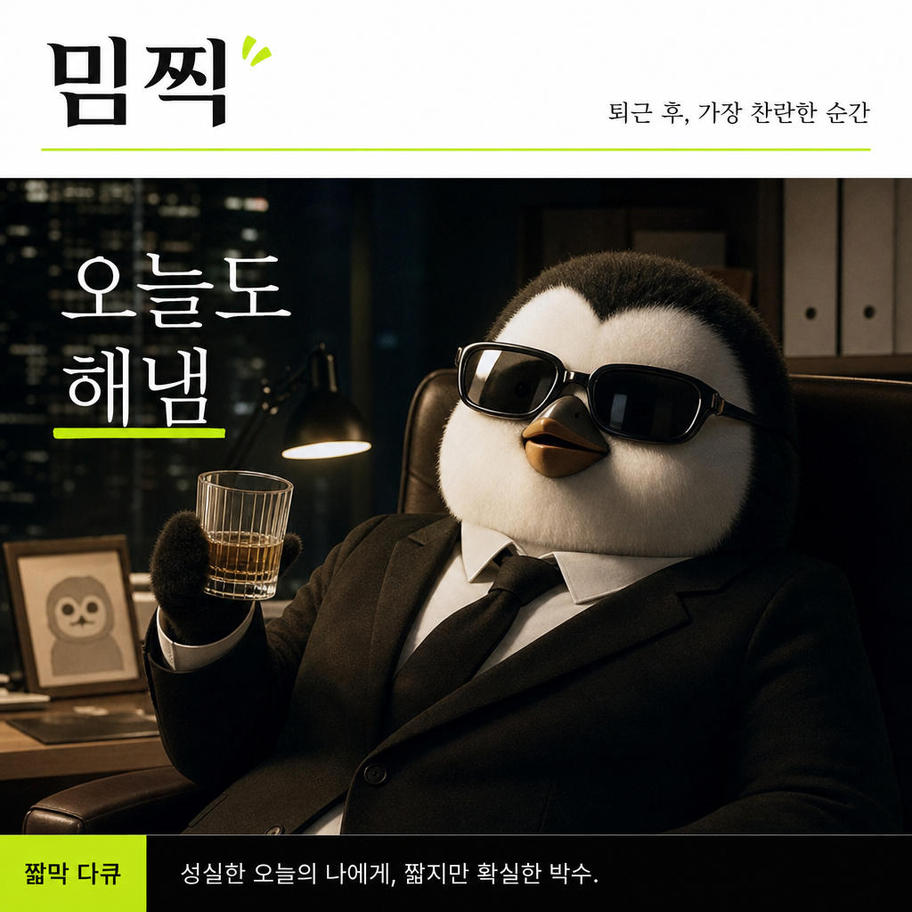

AI meme camera
사진 한 장으로바로 밈찍.
업로드, 프리셋, 톤, 생성 모드를 한 화면에서 고르고 바로 공유 가능한 방송 캡처형 밈을 만듭니다.
1Upload
2Preset
3Mode
4Generate

짧막 다큐
퇴근 후, 가장 찬란한 순간
Image
사진 올리기
업로드한 이미지는 결과 생성을 위해서만 서버로 전송되며 MVP에서는 영구 저장하지 않습니다. 본인에게 권리가 있는 사진만 사용해주세요.
Recipe
밈 설정
시나리오 프리셋
톤
생성 모드